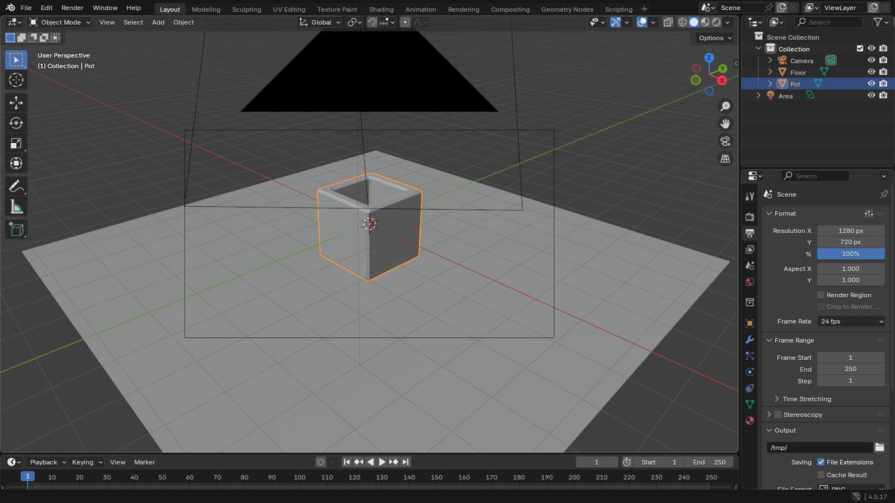
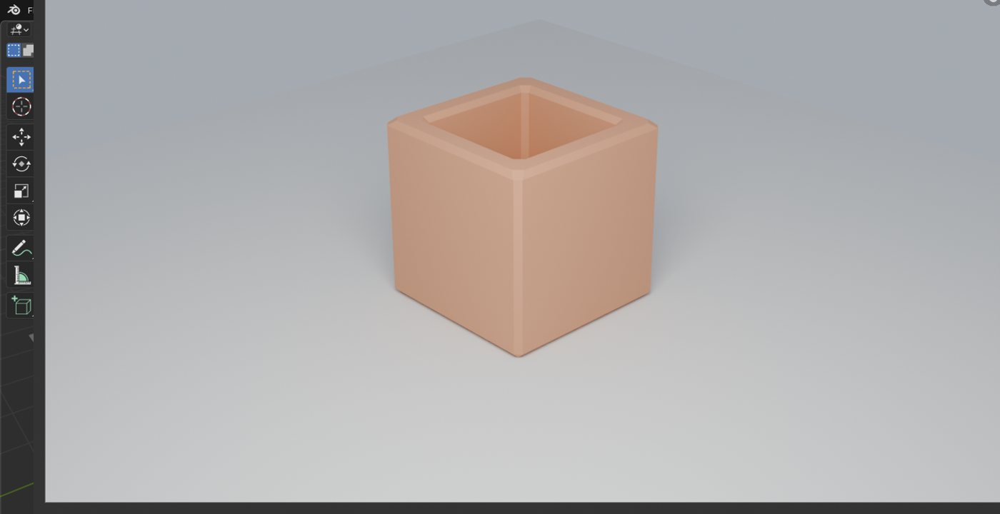
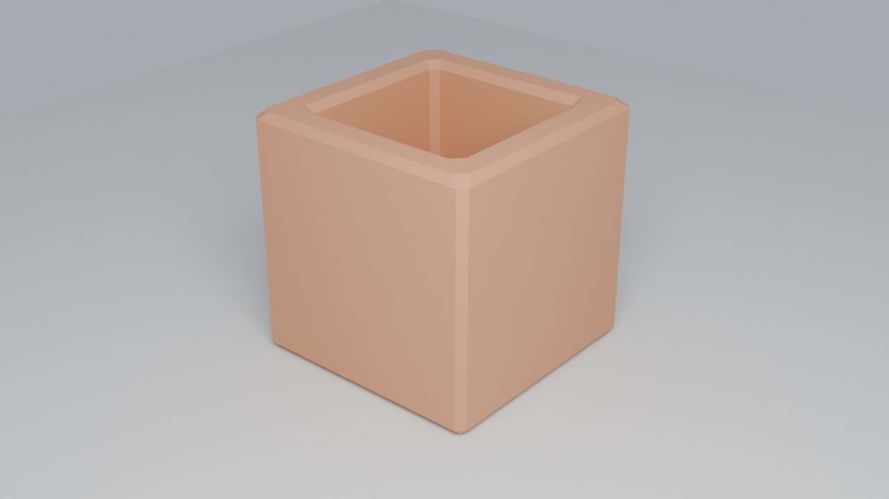

Lesson 6 of 8
Rendering and Saving the Image
Make the final image and save it.
1. Render settings
In the Render tab in Properties, choose the render engine:
- EEVEE: faster, and gives a good result to start with.
- Cycles: slower, but with lighting and shadows closer to real life. Raise the number of Samples to reduce grain (the image below was made with 48 Samples on Cycles).
2. Image size
In the Output tab set the Resolution. The default is 1920 × 1080, and the image below is 1280 × 720.

3. Render
Press F12. A window opens and builds the image bit by bit (on weaker computers it can take a minute or more). For animation use Ctrl + F12.

4. Save the image
In the render window choose Image > Save As, name the file and save it as PNG. Save the project file too with Ctrl + S.
The result

Tip: save the project before any long render. When you finish, try changing the material color and the light and render again.
What next?
Try adding a plant to the pot (a green sphere squashed along Z), or make a set of pots in different sizes, and check the shortcuts table.